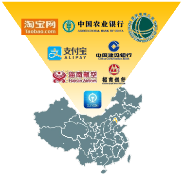
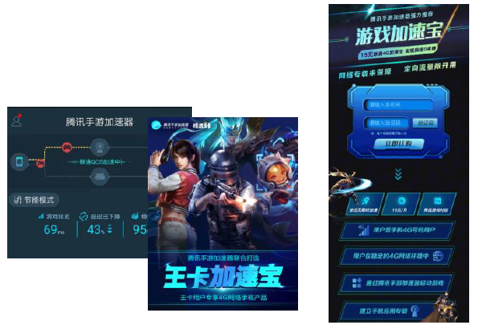
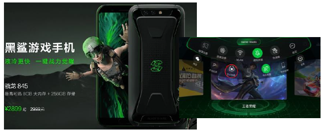
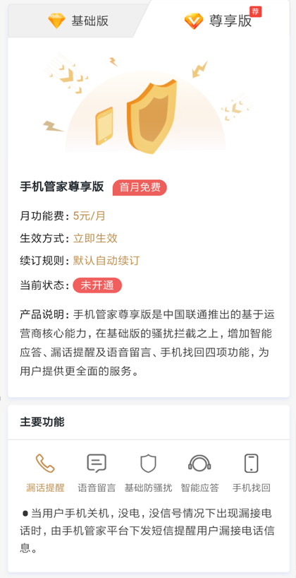
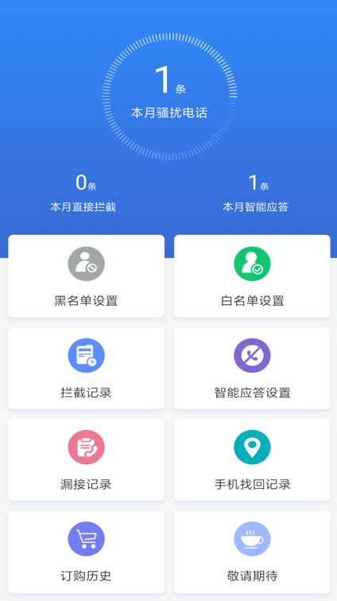

团队深耕通信行业多年，精通电信运营商技术，对电信行业发展现状有深刻理解。
团队长期从事高性能计算与大数据服务
为电信运营商与互联网企业提供数据服务平台
解决行业发展痛点
团队深耕通信行业多年，精通电信运营商技术，对电信行业发展现状有深刻理解。
运营商与互联网企业的合作，推动通信与数据服务能力向更多业务场景开放。
针对行业痛点，研发高性能数据服务平台，提供低时延、高性能、高可用的数据服务。
团队明星项目
团队自主研发高性能短信网关，支撑中国联通行业短信业务。

日均发送短信
日最高发送短信
累计接入用户
团队明星项目
团队建设取号网关，将运营商网络身份能力开放给互联网应用。
历史服务规模
中国联通采购该取号网关，并用于向客户提供取号服务。
| 环节 | 密码验证 | 短信验证 | 运营商取号 |
|---|---|---|---|
| 用户侧 | 输入密码 | 输入短信验证码 | 应用获取鉴权码 |
| 服务端 | 校验密码 | 校验验证码 | 凭鉴权码查询号码 |
团队明星项目
游戏加速、直播加速与学习场景限速 · 历史产品界面及当时资费


应对广告推销、诈骗电话与“响一声”等来电骚扰 · 历史产品界面及当时资费


团队明星项目
团队明星项目
团队明星项目